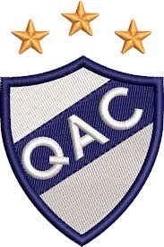
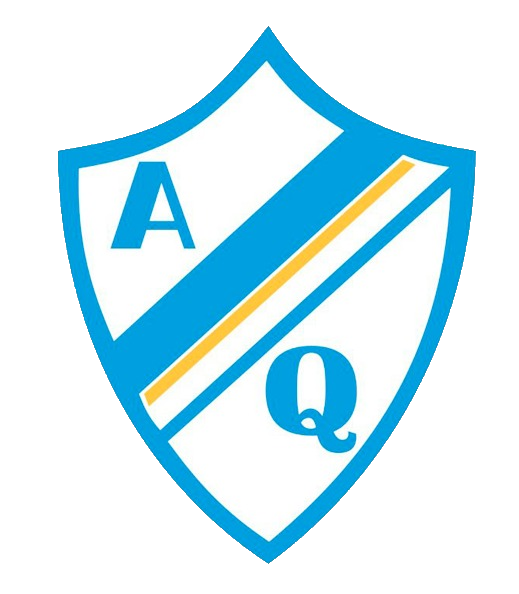

Quilmes:Deportes
Quilmes Atletico Club
El Q.A.C. es una institución deportiva argentina, de la ciudad de Quilmes, provincia de Buenos Aires. Sus principales deportes son el fútbol masculino, donde participa en la Primera Nacional, y el hockey sobre césped, siendo el primero de estos el que recibe mayor prioridad es un club ganador de 2 ligas argentina una en la era amateur, obtenido en 1912 y la otra en el profesionalismo, el Metropolitano 1978 y también ganó una copa nacional en 1908, la Copa de Honor Municipalidad de la Ciudad de Buenos Aires.. Promueve la práctica de varios deportes, como el tenis, natación, básquet, gimnasia, patín, artes marciales, vóley. Posee además una escuela de fútbol para los más pequeños. En su actividad principal, el fútbol, el club ostenta dos títulos de Primera División: uno en la era amateur, obtenido en 1912, y otro en el profesionalismo, el Metropolitano 1978. A su vez, ganó una copa nacional en 1908, la Copa de Honor Municipalidad de la Ciudad de Buenos Aires. Junto a Argentino de Quilmes, disputa el Clásico quilmeño, aunque el último encuentro oficial entre ambos data del campeonato de Primera B 1981.[5] En la Primera División, acumula once ascensos. Con doce descensos en su haber, es el club que más veces perdió la primera categoría en la historia del fútbol argentino; pero también el que más veces ascendió.

Argentino De Quilmes
El A.D.Q es un club de fútbol argentino fundado el 1 de diciembre de 1899. Su sede se encuentra en la ciudad de Quilmes, ubicada en el partido homónimo perteneciente a la provincia de Buenos Aires. Su estadio es conocido popularmente como la Barranca Quilmeña y desde 2025 denominado Estadio Dr. Isidoro Iriarte, el cual cuenta con capacidad para 5.000 personas. Participa en la Primera B, tercera división para los clubes directamente afiliados a la AFA. El logro más importante en la historia del club fue el ascenso a la Primera División en 1938, tras salir campeón de la Primera B ganándole la final a su clásico rival Quilmes. Es uno de los clubes que descendió a la Primera D habiendo llegado a participar de la Primera División junto con El Porvenir, Dock Sud y Sportivo Barracas, aunque fue el único que jugó en la máxima categoría profesionalmente. El máximo rival del equipo es Quilmes, con quien disputaba el Clásico quilmeño, aunque el último encuentro oficial data del campeonato de 1981.[1] Además del fútbol, también el club tiene práctica de balonmano, básquet, vóley, tenis, paddle, taekwondo y natación. En su predio posee piletas, quinchos, parrillas, gimnasio, restaurante, salón para eventos y canchas de fútbol sintético. En temporada, también en el club, funciona una colonia para niños.
